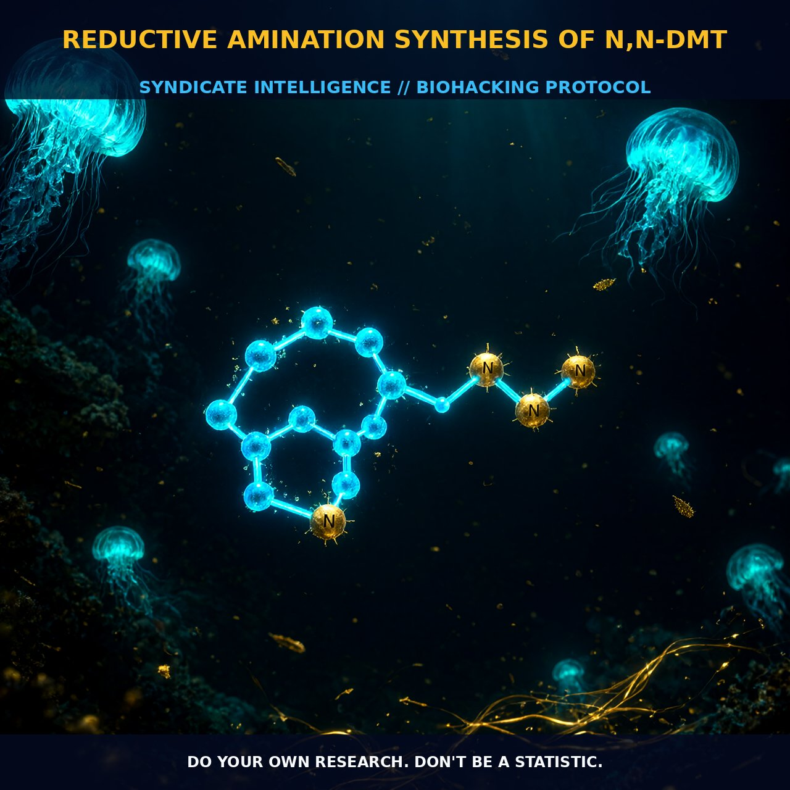

Reductive Amination: Synthesizing High-Purity Endogenous DMT

1. The Mechanism of Reductive Amination
The reductive amination of tryptamine stands as the most chemically elegant pathway to N,N-Dimethyltryptamine (DMT), bypassing the multi-step complexity inherent in traditional synthesis routes. This single-step protocol initiates with the condensation of tryptamine and formaldehyde under acidic conditions, generating an intermediate iminium ion as the primary structural precursor.
The critical variable governing this mechanism is the rapid reduction of the iminium ion by sodium cyanoborohydride. This step effectively locks the dimethyl group onto the nitrogen atom, preventing side reactions that would otherwise compromise the final yield. When stoichiometry is meticulously controlled, this method produces DMT with remarkable efficiency, often approaching seventy percent yield in a single operational step without requiring complex purification matrices.
2. Chemical Environment and Purity Dynamics
Purity of the end product is dictated by the competition between reduction and cyclization pathways. If the initially formed iminium ion is not reduced swiftly, it becomes susceptible to Pictet-Spengler cyclization, leading to significant byproducts such as 2-methyltetrahydro-beta-carboline and tetrahydro-beta-carboline.
These carboline derivatives are not merely inert waste; they are structurally relevant compounds that influence the pharmacological profile if left in the matrix. By maintaining a reducing environment rich in sodium cyanoborohydride, the synthesis effectively outcompetes cyclization, ensuring that the free base form of DMT remains the dominant species for subsequent isolation.
3. Biological Leverage and Endogenous Parity
DMT serves as the structural archetype for all indole-containing serotonergic psychedelics, a role defined by its position within the broader tryptophan metabolic cascade. In mammalian physiology, biosynthesis mirrors this synthetic simplicity: tryptophan undergoes decarboxylation to form tryptamine, which is then dimethylated by the enzyme indole-N-methyltransferase (INMT) using S-adenosylmethionine as the methyl donor.
The presence of INMT in critical tissues such as the placenta and brain suggests a regulated biological function extending beyond transient psychoactive signaling to potential developmental or homeostatic roles. As an endogenous hallucinogen, DMT modulates perception, mood, and cognition through its ability to cross biological barriers and interact with central nervous system targets.
4. Tactical Implementation for Optimal Extraction
To leverage reductively aminated DMT effectively, one must consider solvent dynamics during isolation to prevent structural degradation. Chloroform is the preferred extraction solvent for the free base because DMT reacts slowly with dichloromethane, which can produce N-chloromethyl-N,N-dimethyltryptamine chloride as a byproduct.
A basic aqueous workup following synthesis allows for the efficient partitioning of the free base into the organic layer. This ensures a cleaner profile that aligns closely with the pure compounds used in seminal clinical studies. Furthermore, understanding the metabolic fate of DMT provides a framework for usage timing; individuals with high baseline monoamine oxidase activity may require different dosing strategies compared to those utilizing ayahuasca-like compounds that inhibit this enzyme.
Prostar Life Hack
Prioritize Chloroform over Dichloromethane for extraction to prevent N-chloromethyl byproduct formation. Ensure a basic aqueous workup to isolate a pure free base profile that mirrors endogenous synthesis rates (250-360 pmol/g/hr), maximizing psychoplastogenic potential.
[ AUTHOR: LEAD TECHNICAL RESEARCHER ]